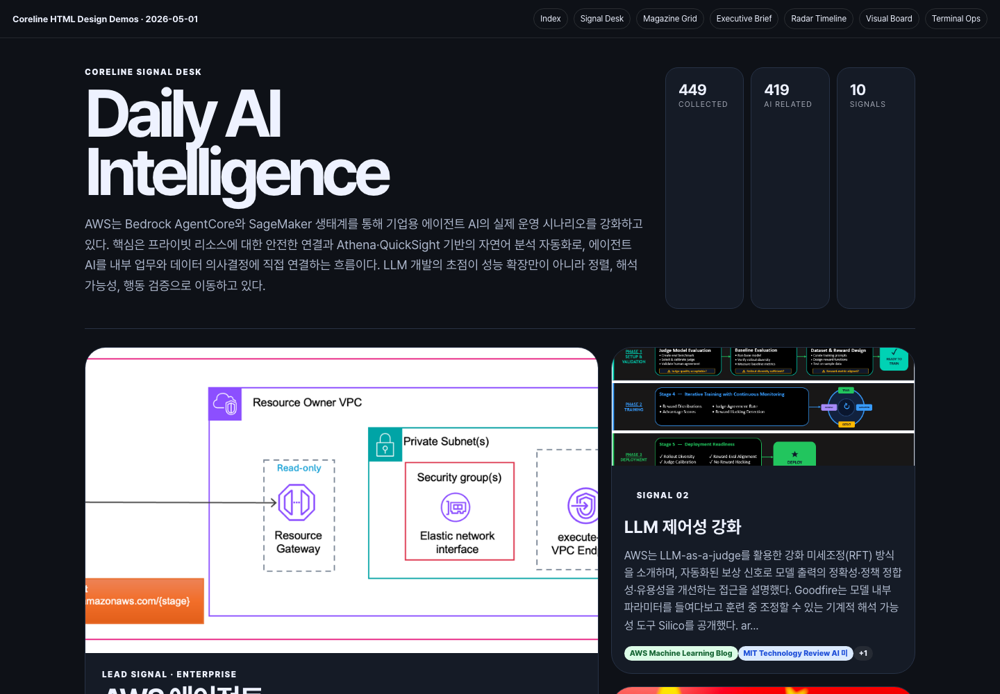
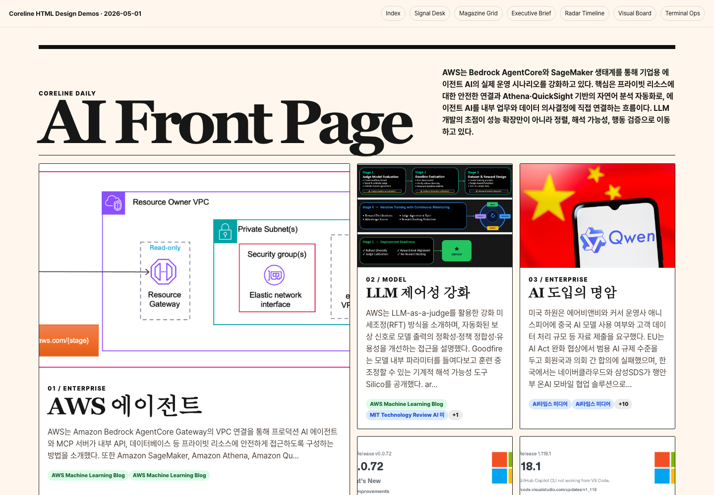
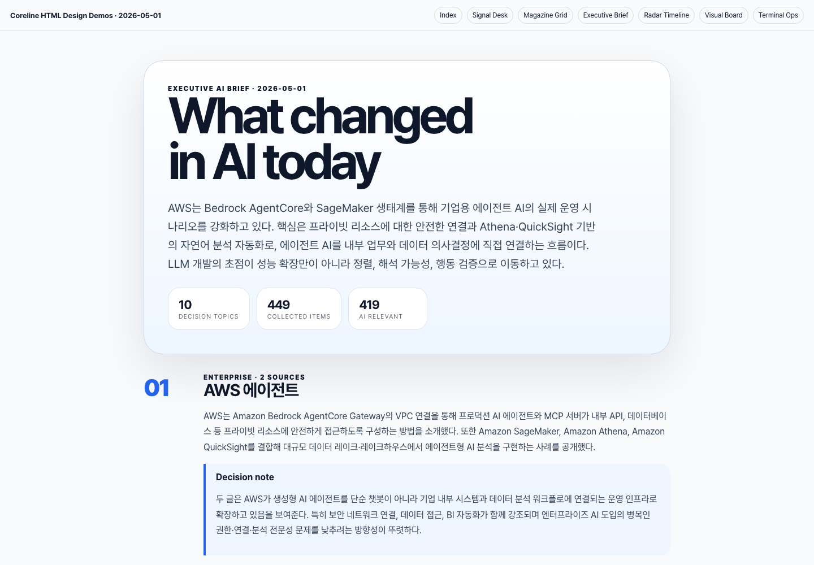
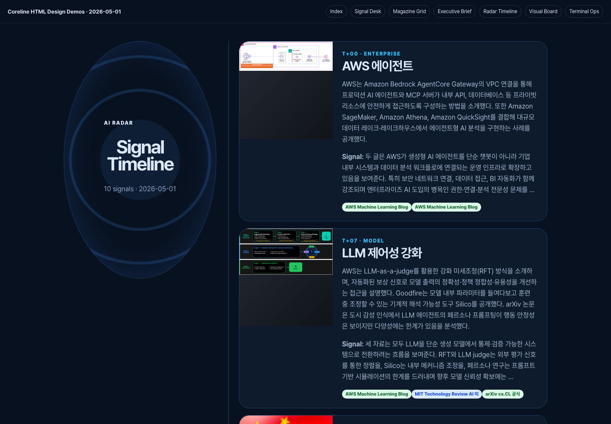
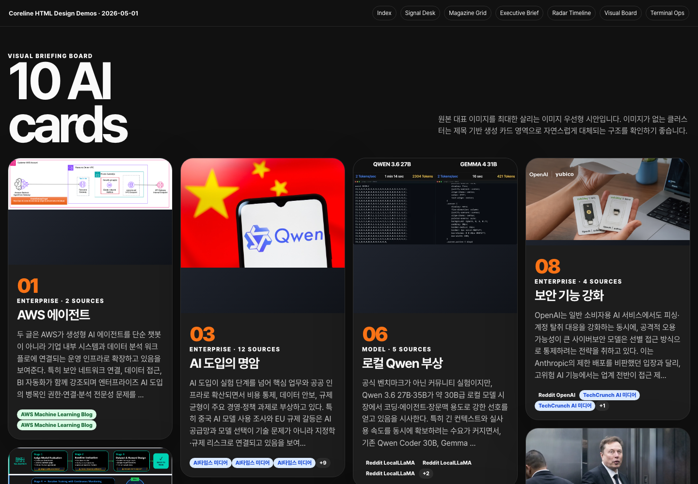
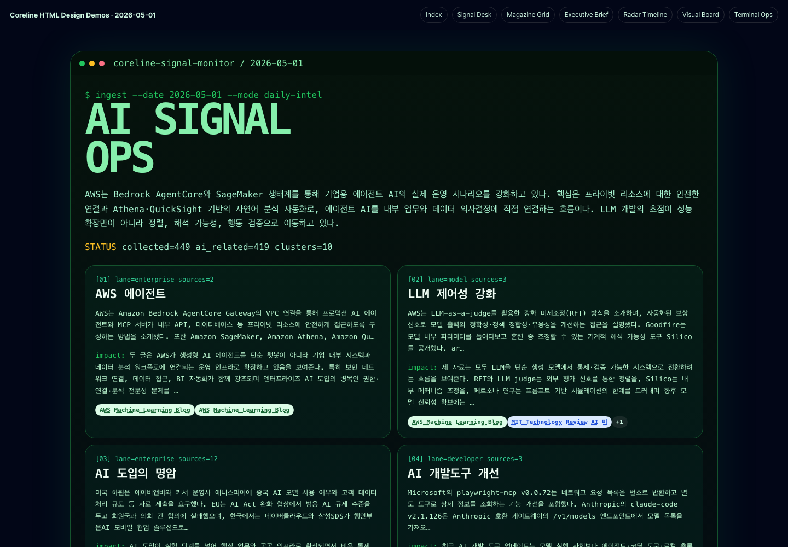
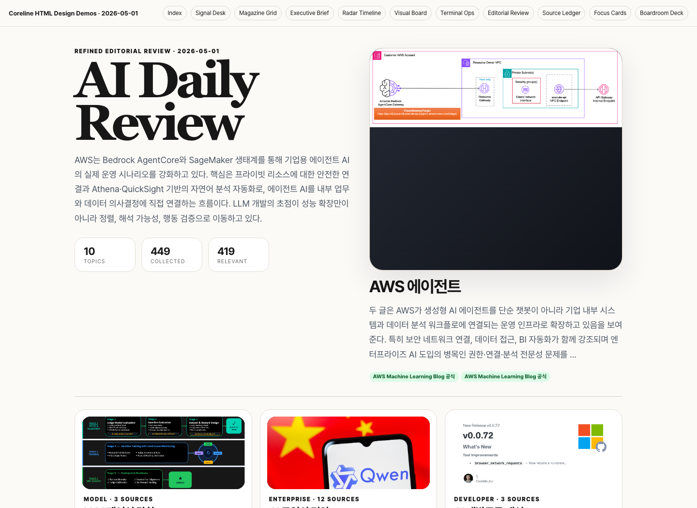
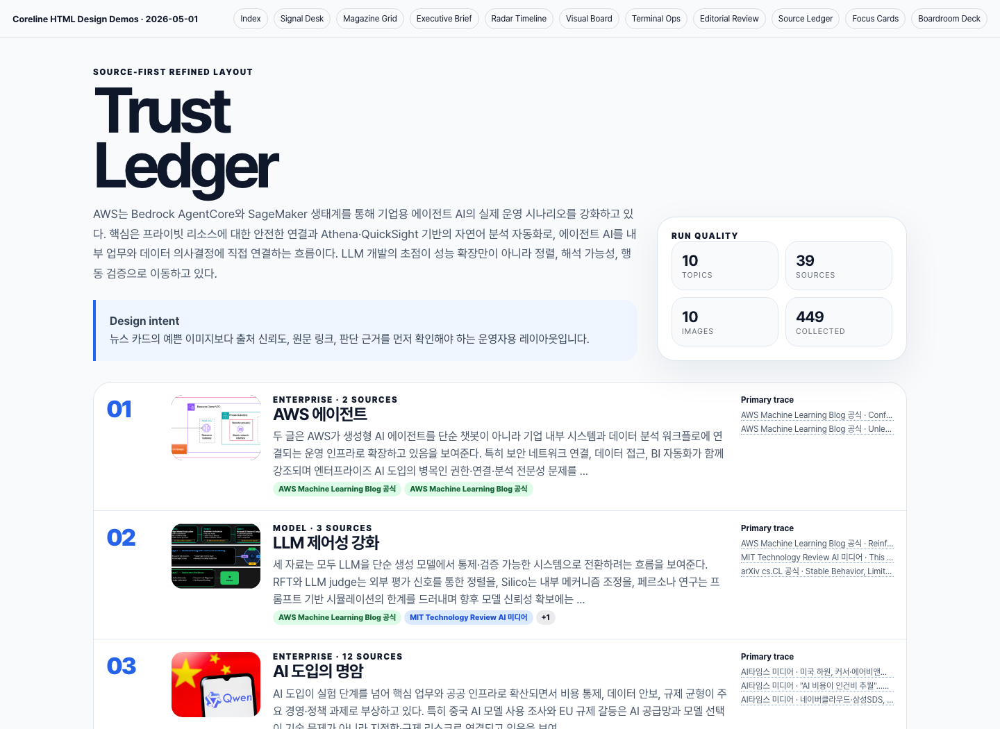
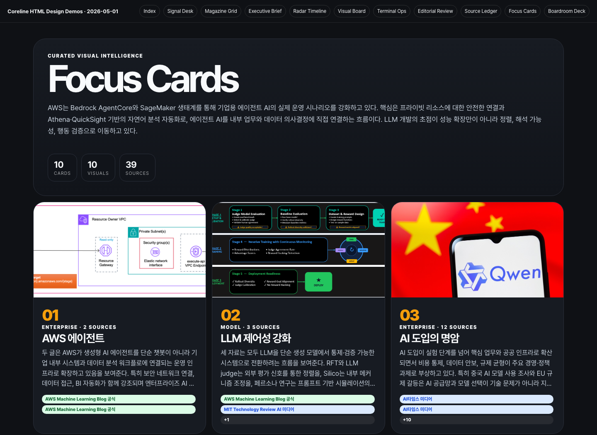
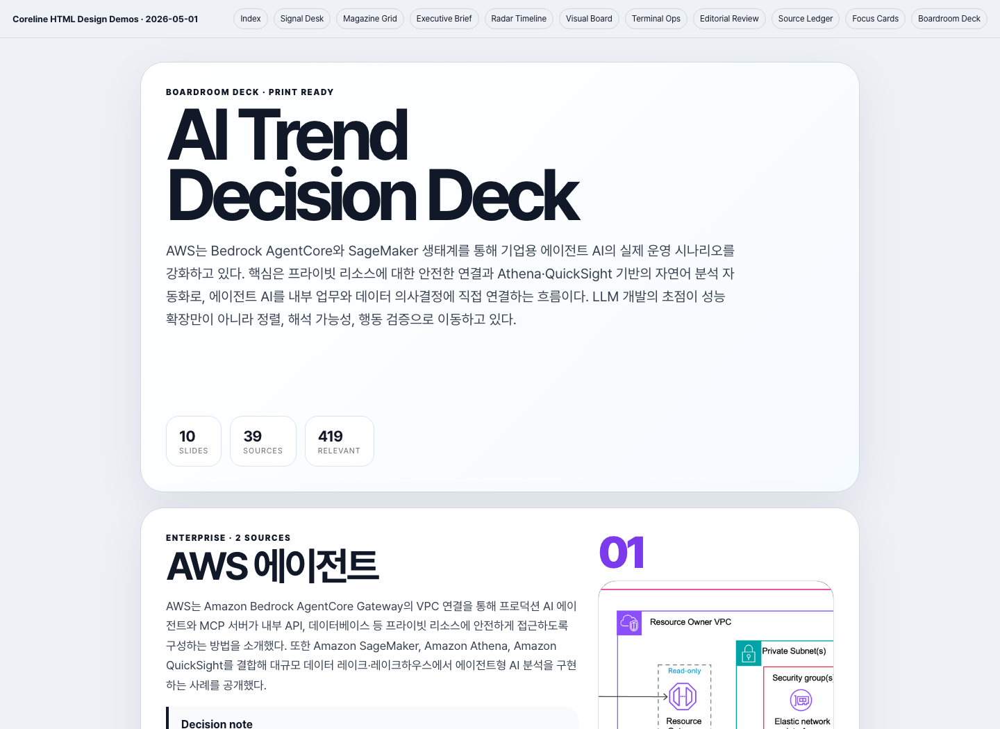

Demo 01
Demo 01
Coreline Signal Desk
가장 추천. 상단 lead story + 핵심 signal grid + 출처 ledger. 실제 적용 후보 1순위.

Open demo →현재 생성된 2026-05-01 HTML의 실제 10개 클러스터와 원본 이미지를 기반으로 만든 정적 시안입니다. 기존 파이프라인은 건드리지 않고, 어떤 HTML 형태가 가장 적합한지 눈으로 비교하기 위한 데모입니다.
가장 추천. 상단 lead story + 핵심 signal grid + 출처 ledger. 실제 적용 후보 1순위.

Open demo →이미지 중심 뉴스 프론트 페이지. 시각 임팩트가 강하고 카드 탐색에 적합.

Open demo →PDF/임원 보고용 텍스트 중심 구조. 표지, 요약, 섹션별 메모를 안정적으로 보여줌.

Open demo →하루의 AI 흐름을 레이더/타임라인처럼 보는 모니터링형.

Open demo →대표 이미지가 살아나는 Pinterest/briefing board형. 이미지 정책 검증에 좋음.

Open demo →개발자/운영자 취향의 dark intelligence console. 개성 강함.

Open demo →정제된 에디토리얼 리포트. 이미지와 텍스트 균형이 좋고 최종 HTML 후보로 안정적.

Open demo →출처 검증과 의사결정 근거를 전면에 둔 운영자/검수자용 레이아웃.

Open demo →Visual Board를 더 차분하게 정제한 이미지 카드형. 강한 비주얼과 읽기성을 함께 확보.

Open demo →슬라이드/PDF 전환을 전제로 만든 보드룸 브리핑 덱. 페이지 단위 공유에 적합.

Open demo →